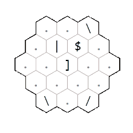
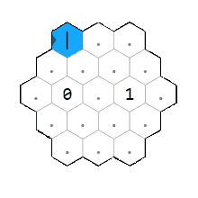
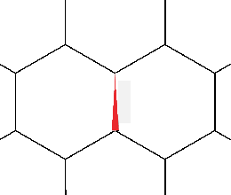

Esolangs: Hexagony
6 / 8 / 21
This is the first article of a series on cool esoteric programming languages. In brief, these are languages constructed with the sole purpose of being absurd and unique and are often not actually very useful for coding. For our first look at esolangs, lets explore the 2-dimensional language Hexagony.
Designed in 2015 by Martin Büttner, Hexagony works by placing commands on a hexagonal grid which can be traversed in any direction. The memory for the language is also hexagonal, with each edge of an infinite hexagonal tiling of the plane holding a single integer value.
The language includes a total of 93 commands but we will focus only on the more important ones to get started. For a full breakdown of each of the commands, the control flow, and the memory model, refer to the original interpreter page here.
Instruction Pointers and Pointer Manipulation
An interesting feature of Hexagony is that there are 6 instruction pointers (IPs) which start in the six corners of the hexagonal grid. The program always starts with the top left pointer moving along the top edge to the right, but we can switch to the different pointers later in the program if we so desire. To angle our pointer and move it around in our 2-dimensional work space, we have a number of 'mirror' commands which reflect the flow of the pointer in the obvious direction. These mirrors include /, \, |, and _.

IP0 reflecting off mirrors and wrapping around the edges of the grid
A key thing to notice in the example above are that when the pointer leaves the hexagon, it wraps around to the other side. In particular, if the rows are numbered 0 through n, leaving on row k < n/2 brings the pointer to row n/2 + k. Leaving along a bisector of a vertex will bring the pointer to either the top or bottom row depending on if the current memory cell is ≤ 0 or > 0 repsectively. The other thing to notice from this example is that the pointer will pass through mirrors it is parallel to.
We also have the < and > commands which act like mirrors along the expected directions, flow-redirectors in the direction they point, and branches when the pointer enters from the vertex. Determining which branch the pointer takes is the same as for when the pointer leaves along the vertex of the grid.
Other movement commands include $ which acts as a 'jump' skipping the next command and ], [ which increment and decrement the current pointer respectively. When we switch pointers, the old pointer stops moving but its position and orientation are remembered. We resume movement on the new pointer from its previous position and orientation.

Example of jump command and incrementing through all 6 pointers
Memory Manipulation
The memory is initialized as an infinite hexagonal grid with the value 0 assigned to each edge. There is a single memory pointer oriented along one of these edges. The 52 letter characters will set the current memory edge to the letters ASCII value. The digits 0-9 will multiply the current edge by 10 and then add the digit (this is useful because it lets us process decimal numbers in our code despite memory edges holding only integer values).

